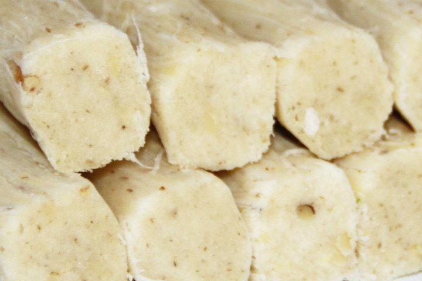

Balaban köfte

One of the most famous and delicious dishes of the city is balaban dumplings ,pancakes cut in tiny squares with bones of water, a tomato sauce, yoghurt and
butter on top, and finally grill panes. It's a delicious meal for us, too.
Çibörek

Although it is known as "çiğbörek" in general, this flavor, which is actually called "çibörek", is the most beautiful contribution of Crimean Tatars to Eskişehir.
The mixture of onion, mince and various spices is a perfect match with the dough and the resulting sprouts. Eskişehir offers different restaurants with different kinds of ingredients.
Met helvası
The main ingredients are flour, sugar, lemon, oil and water, the most famous of the city. It is very difficult to make this delicious dessert which is enriched with various nuts or cocoa.
That's why it would be good to get it from the places where real masters work instead of doing it at home for a good meal.